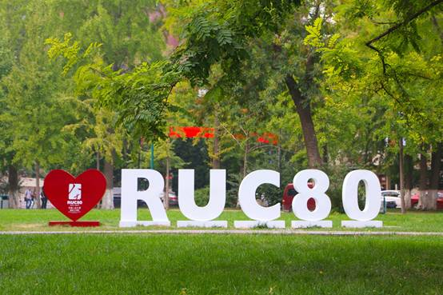
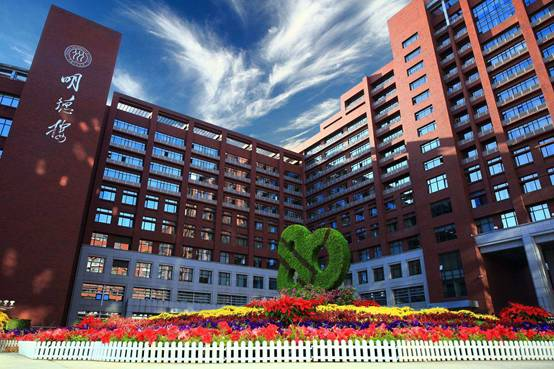
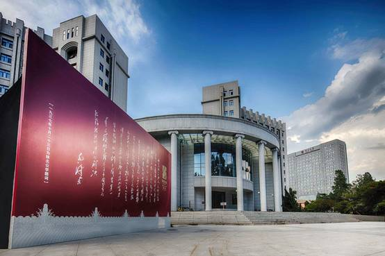
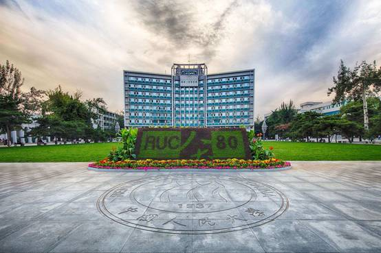
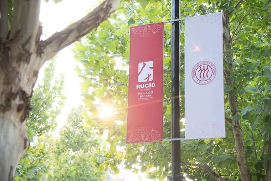

收录于合集

作者：杨光斌，中国人民大学国际关系学院院长、政治学系教授、博士生导师
**
**
值此 中国人民大学喜迎 80 周年华诞 与 政治学学科入选国家 “ 双一流 ” 建设项目 之际，今天“政观”团队向各位读者朋友分享人大政治学系杨光斌教授发表在 国家社科顶级期刊《中国社会科学》 2009年第3期上的一篇颇具影响力的大作，以此自勉，以学术为志业，不忘初心，砥砺前行。
【摘 要】巴林顿·摩尔的“没有资产阶级，就没有民主”使得民主变成了资产阶级的专利，今天这个专利演变为亨廷顿的“中产阶级带来民主”。从社会主义运动史与比较制度变迁的关系出发，我们可以发现民主经历了一个正反合的演变过程，从原初旨在实现人人平等的多数人统治，演变为保护少数人即资产阶级财产权的工具，再发展到今天作为实现大众平等权的工具。在民主的发展过程中，资产阶级的主要贡献在于宪政建设和精英民主，而大众民主的到来，则要归功于以下层阶级为主体的工人运动和其他非资产阶级阶层的斗争。在考察民主历程的基础上，重新认识民主的社会主义属性，有助于质疑形成于特定经验的社会科学的普适性问题。
【关键词】民主 资产阶级 财产权 平等权 社会主义
**
**

在我们的社会科学知识体系中， 充斥着不少神话般的故事以及由此而来的“常识”，它们被不加辨别地接受，被视为理所当然，渐渐地被内化为“定理”、“规律” 和思维方式，以至于人们对“常识”不再辨别，用“常识” 去思考，用“常识” 去讲故事、说历史、评现实，而这种神话般的“常识” 却可能是伪知识、假规律。在思想界，美国著名现代化理论家巴林顿·摩尔的一句“没有资产阶级，就没有民主”，就是一个神话般的故事。我们知道，巴林顿·摩尔是根据英国、法国、美国、德国、日本、俄国以及中国农业社会的资本主义化程度而得出这一著名论断的。自1968 年摩尔的著作问世以来，虽然也有批评，比如摩尔的学生认为其忽视了国际事件对民主化进程的影响，有左翼学者则完全否认资产阶级在民主政治中的中心位置，但是摩尔的论断，事实上却一直是国际社会科学界研究民主化进程的一个重要标杆。沿着摩尔宏观的阶级分析方法论，亨廷顿将“没有资产阶级就没有民主”置换成“中产阶级带来民主”。但是和摩尔一样，亨廷顿不能回答中产阶级通过什么样的机制、制度而走向民主。迪特里希·鲁施迈耶（ Dietrich Rueschemeyer）等人在沿着发展主义路径，以发达工业国家、拉丁美洲为观察对象进行研究时发现，民主的兴起和存续既不能用资本主义与民主之间的总体性结构适应来解释，也不能用资产阶级作为民主改革的代理人来解释。事实上，是资本主义的发展为民主的发展创造了条件。资本主义的发展改变了阶级结构，扩大了劳工阶级和中产阶级，加速了他们的组织化，使得政治精英在政治运行过程中很难将他们排除在外。同时，资本主义的发展还削弱了民主最顽固的敌人——大地主阶级。这样，鲁施迈耶等人就将1960 年代流行的发展主义(发展—民主)改版为新发展主义，即“资本主义发展—有利于民主的制度安排—民主”。
无论是亨廷顿的“中产阶级带来民主”还是鲁施迈耶等人的新发展主义，事实上都是从不同的角度强化了摩尔的神话，民主说到底还是被当作资本主义的产物，民主自然也就有了资产阶级性质——尽管新发展主义也承认，发达工业国家中的工人阶级对特定时期(20 世纪之交)的民主飞跃具有决定性的作用，但无论如何， 却是资本主义制度本身为民主的发展创造了条件。因此，不管从什么样的角度而言，大部分主流学者都将民主看作是资本主义的产物，这些观点从本质而言，都没有超出自由主义意识形态的范畴。正因为大部分学者都把民主与资本主义制度本身看作是共生的关系，因而，很多研究中国政治的海内外学者，都认为只有中国新兴的企业主阶层才是推动中国民主进程的动力。当他们谈到中国新兴企业主阶层时，一个自觉或不自觉的话题就是新兴企业主与民主政治的关系，海外很多基金会也乐意资助这样的研究项目，其中暗含着对中国共产党主导政治体制改革的质疑。遗憾的是，由于是在研究“神话”，几乎所有的研究都得出了与其期望相反的结论：中国的新兴企业主更愿意在体制内实现利益诉求。这种结论似乎是意料中的，每个国家的政治发展都有其自身的特点，企图用一个基于特定经验的研究范式移植在中国政治研究上，结果只能是南辕北辙。摩尔、亨廷顿和鲁施迈耶等人不能回答的一个难题是，尽管资本主义经济带来新的商业化阶级并形成有利于民主的制度条件，为什么很多国家的商业阶级不再是民主的推手或代理人，他们甚至成为民主的反动力量? 我认为，这既有政治时空变迁以及由此导致的民主功能转化的原因，也有阶级合作主义的政治文化上的因素，因而使产生于特定语境中的概念的分析功能大打折扣。基于此，本文的目的在于重新认识民主的政治属性，认为大众民主是在资本主义社会这个母体中孕育的一个社会主义因素。
本文的研究路径主要是社会主义运动史的视角，辅助以政治文化视野的诠释。为了打破“没有资产阶级，就没有民主”的“神话”，首先需要弄清楚“神话”是如何产生的，为什么“神话”会有广泛的市场?

一、“神话”的脚本
“神话”有两种，一种是根本不存在的“嫦娥奔月”式的民间传说，一种是曾经在特殊条件下发生过的故事，却被渲染成普世性的、神话般的“常识” 和“奇迹”，人们渐渐地把故事当作了“神话”。
民主是一种和文明的人类社会一样古老的政治理念和政治实践。在民主的古希腊语的含义主要是统治、权力。两个希腊词汇组合在一起之后，民主也就包含了两层含义，即公民统治和平民统治。亚里士多德也正是在这个意义上论述古希腊共和政体与平民政体的。这是民主的原始形态。在大多数时候，本文所谈的民主是原始形态意义上的民主。资产阶级革命以后，资产阶级民主的理论基础虽然是“人民主权”，但是“人民”变成了以财产权为基础的少数人。现代西方“宪政民主” (它由法治、权力制衡、代议制、选举制、多党制、任期制等一系列制度构成)， 在理论上被总结成“精英民主”。“精英民主” 排除了大众对民主的贡献， 这是完全不符合历史的。“没有资产阶级， 就没有民主”的“神话”正是源于对历史的误解和歪曲。
学术界很多人认为，没有以新兴资产阶级为主体的“第三等级”攻占巴士底狱，就没有法国的民主，因而，法国民主是典型的资产阶级制造。这里，法国民主与资产阶级的关系就被简单化和神话化了。首先，尽管“第三等级”的主体是新兴资产阶级，但是，如果没有巴黎下层民众的冲锋陷阵，资产阶级能否取得革命的成功? 其次，在法国大革命过程中出现了雅各宾专政，雅各宾专政的极端措施，引发了资产阶级学者对“暴民专政” 的批判和“宪政”的呼唤，但这种批判本身并不能否定下层民众对民主的推动作用。第三，正是法国资产阶级的脆弱性和政治上的依附性， 导致了法国大革命后民主政治的反复。
从法国大革命到1958年第五共和国，其间经历了十个“朝代”，资产阶级在大多数时期都不能独立地发挥作用，总是依附于波拿巴皇帝和国家力量，由此才形成了中央集权制的自主性国家。托克维尔指出：“民主革命扫荡了旧制度的众多体制， 却巩固了中央集权制。”革命导致的混乱使法国人更加渴求秩序， 因而先后有拿破仑皇帝和波拿巴皇帝。在整个19 世纪，中央集权制更加完备，法国并没有因为资产阶级革命而使资产阶级强大起来并主导国家发展， 从而形成了马克思所说的自主性国家。根据英国经验，马克思总结出了社会中心主义的工具主义国家理论。但是，在历史与现实中，国家作为凌驾于市民社会/生产关系领域之上的力量并未完全表现出工具性，有时甚至不顾统治阶级的诉求而采取行动。马克思注意到了国家的这种自主性现象。马克思认为，波拿巴国家之所以能够摆脱工具性角色，取得相对于社会的自主地位，主要与两方面因素有关：首先，法国的行政机构十分庞大，深入到社会生活的各个领域， 严密控制着整个社会，导致市民社会相当软弱。其次，法兰西第二共和国时期分裂的阶级关系为波拿巴国家赢得自主性创造了条件，使“行政权成为不可克制的权力”。简单地说，在法国，资产阶级掀开了民主政治的序幕，却没有能力巩固民主，最终还是国家力量将法国的民主定型，这就是戴高乐的法兰西第五共和国。
美国民主的故事同样是制造“神话”的脚本。我们知道，“五月花号”的船民们在航行中就开始依据社会契约观念设计新大陆的生活方式和政治秩序，最初的13个州基本上都是依照社会契约观念而形成的新型共同体，也就是我们今天所看到的美国政治的原初形态。我们需要追问的是，“五月花号”的船民们都是些什么人? 最初到新大陆的一批人全是资产阶级吗? 历史告诉我们，他们中间有的是受迫害的异教徒，有的是为了逃避法律制裁的罪犯，更多的是在英国生活不下去的穷人。因此，所谓的“美国的民主”很难说是资产阶级创造的。美国独立战争之后，尽管签署1776 年《独立宣言》和参加1787 年制宪会议的129 个开国元勋们来自最富有、最显贵的家庭——他们是种植园主、律师、商人、金融家、制造商和高级官员，但是当时美国并没有形成一个具有统一阶级意识的资产阶级，他们拥有的只是来自英国的天然自由气质。更重要的是，当时这些精英分子设计的制度是一种精英主导的共和政体，而不是强调平等的民主政体，他们反对大众参与政治，追求的是罗马共和国中的贵族政体，一个限制多数的“由少数公民亲自组织和管理政府的社会”。特别需要强调的是，即使像某些人宣传的那样，美国是西方宪政民主的“典范”，那这个“典范”的形成也绝不该忘却两个重大的历史事件：第一，正是1830 年代由民粹主义运动破除了财产资格限制，才使得80%的美国白人男性有权参与总统选举以及其他各类选举。第二，直到1964年通过《民权法案》，美国黑人才获得了平等的选举权，而《民权法案》显然是作为下层阶层的黑人运动推动的结果。可以说，美国的共和政体产生于开国之父们的理性设计，而民主范围的扩大则是迫于下层民众运动的压力。因此，美国的政治学家才经常这样说，如果美国的开国之父们活到今天，他们一定会为面目全非的政体而目瞪口呆。
与美国有所不同的是，英国早期的宪政民主主要是阶级博弈即新兴资产阶级与皇室和贵族阶层斗争的结果。“光荣革命”从根本上约束了国王的肆意妄为，实现了“王在法下” 的宪政，使英国不再存在因国王借钱不还而导致的“君主债务危机”即国家财政危机。然而，“光荣革命”的成功并不意味着民主的胜利。资产阶级获得选举权以后，立刻变得保守起来，和传统的贵族势力一道，扼杀工人阶级的民主诉求。19世纪30—40年代英国发生了规模浩大的宪章运动， 工人提出了《人民宪章》，要求取得参政权。但是，议会不但没有讨论《人民宪章》， 统治阶级还残酷地镇压了宪章运动，因为工人阶级政治权利的要求直接威胁着资产阶级的财产权利。从宪章运动所表现出的阶级对立和冲突中，我们看不出被后人颂扬的英国渐进和妥协的政治传统，而是坚定不移地血腥镇压。更重要的是，宪章运动同时催生了资产阶级和无产阶级的阶级意识，资产阶级从宪章运动中看到了无产阶级的力量和其对资产阶级私有财产权的威胁，在威胁面前，正是资产阶级与政府的团结才使得政府毫不动摇地对宪章运动进行镇压。宪章运动虽然被镇压了，但是下层阶级所表达的参政诉求是一种持续性的强大压力，最终迫使20年以后两党在选举中竞相承诺开放选举权，催生了1867 年的选举改革。1867年的选举改革法使选民总数扩大到230万，其中城市选民的增加人数大大超过了农村选民的增加人数，中产阶级、城市中的手工业者和大多数家境富裕的产业工人也获得了选举权。因此，如果说英国第一阶段的民主是资产阶级推动的，第二阶段的民主则是工人阶级推动的，而且资产阶级是非常不情愿让工人阶级获得选举权的。这就是英国宪政民主的早期历程，这也是所谓的资产阶级推动民主的“神话”故事。
关于英国、美国和法国的民主神话，大致可以进行这样的总结：资产阶级创建了宪政体制和有限的精英民主，而工人阶级和其他被压迫民众才是以平等为基础的大众民主的主力军。英、美、法三国的民主发展历程告诉我们，民主需要在宪政的基础上才能正常运转，没有宪政的民主往往是极端危险的(法国)， 而没有民主的宪政也是极端不公正的(英美)。尽管国内外许多学者往往把现代西方民主制度称作“宪政民主”，似乎民主和宪政密不可分。然而，事实上二者之间相去甚远，民主的诉求是人民统治和平等， 而宪政的本质恰恰是要维护秩序和限制民主。发展到现代的西方“宪政民主”是各个阶级博弈的结果，所谓“没有资产阶级，就没有民主”，完全是西方国家为了维护现行秩序而制造的“神话”。

二、没有资产阶级参与的民主
对于第一波现代化国家而言，即使“没有资产阶级，就没有民主”是可以接受的命题，但是民主运动中的下层阶级已经是不可忽视的重要力量，因而，可以说，英、法、美三国的民主进程是资产阶级和工人阶级共同推动的结果。这三个国家的民主进程，为“没有资产阶级，就没有民主”论提供了一定的论据。然而，在其他国家的民主发展过程中，我们更多看到的是“没有资产阶级参与的民主”。
“没有资产阶级参与的民主”包含两个意思：一是一个国家没有资产阶级但发展了民主：一是一个国家虽然存在资产阶级，但它没有起到推动民主的作用。现代化的后发国家纷纷实现了民主政治，到底是什么力量在推动着民主呢? 还得从主要国家的民主历程说起。
第二波现代化国家包括从19 世纪60 年代开始形成的一些新型帝国或开始中兴计划的古老帝国，前者以德国和日本为代表，后者以中国和俄罗斯为代表。
德国的资产阶级曾经一度有希望把德国变成代议制民主国家，但是资产阶级力量的薄弱决定了它不能担此重任。在1862年的“宪法之争”中，在议会中居多数席位的资产阶级代表主张把军队变为议会军队，要求把德国变成和英国一样的“王在法下”的国家，威廉一世也一度决意退休，但政治强人俾斯麦在关键时刻维护了君主政体。从此，德国资产阶级就成为军国主义战车下的一只轮子，在军国主义的呵护下从事赚钱的营生，西门子和克虏伯就这样壮大起来，并和君主一道压制下层阶级的民主要求。资产阶级的进步党领袖欧根·李希特尔这样说：同反对派斗争是次要的事，同社会民主党斗争才是主要的事。这样，资产阶级政党和俾斯麦一道于1878年炮制了对工人阶级实行白色恐怖的“非常法”即《反对社会民主党企图危害治安的法令》。在“非常法”时期，帝国政府实行戒严和报禁，解散工会，禁止集会，大肆逮捕、监禁、流放社会民主党人。但是，恰恰是在“非常法”时期，社会民主党斗争方式的转换使得工人运动更加强大。在德国社会民主党所领导的工人运动的压力下，俾斯麦不但建立了世界上第一个“福利国家”，还在欧洲比较早地实行了普选，使得工人阶级的代表有机会进入议会进行和平斗争。
和德国相比，其他第二波现代化国家的资产阶级对民主的贡献更不值得一提，有的国家甚至根本没有资产阶级，因为阶级存在的必要条件是阶级意识。在俄国，即使有所谓的资产阶级，脆弱的资产阶级也和所有其他阶级一样，依附于沙皇而没有独立性——因为在这个专制主义国家，人们的地位不是依照财产关系，而是依据个人与宫廷的私人关系而确立的。因此，当代表国家的沙皇政权运转不灵时，1905年的资产阶级政权也只能是昙花一现。在日本，现代企业是天皇扶持的结果，没有天皇就没有以三菱为代表的现代企业，更不会有企业家。那时的日本文化根本不可能产生与皇权对立的具有独立阶级意识的资产阶级， 有阶级的话也只是阶级合作主义。日本今天的宪政民主来自外来统治。开启中国现代化进程的洋务运动，更显示所谓的企业家阶层只不过是官本位的另一个更经典的诠释，当时人们推崇的是胡雪岩式的“红顶商人”，这些“红顶商人” 怎么可能追求民主?
和德国一样，二战以后成功走向现代化的新兴民族国家基本上走了一条国家主导下的发展道路。这些国家的资产阶级力量不能和英国相比，甚至也没法和德国相提并论，他们如襁褓中的婴儿，根本不能指望他们去支持民主。何况，下面我将指出，他们根本不想要民主。例如，被西方当作发展中国家民主典范的印度，其民主来自民族独立运动中国大党的民主式运动和目标诉求，而在民族独立运动中所形成的国家意识便是民主和民族主义(国家发展)。印度独立以后，强人和国大党建构的代议制民主并不是建立在阶级基础之上，何况当时的印度根本不存在一个强大的商业阶级。在独立以后的30年时间里，印度的经济政策一直被称为尼赫鲁模式。尼赫鲁模式的基本原则，第一是社会公平，印度不能等待工业化以后再实现社会公平，而要把社会公平作为政府的首要目标。为此，印度借鉴苏联模式实行计划经济式的统制经济，所以，印度虽然在所有制上是公私并存的混合制经济，但是保护公营部门，抑制私有经济是印度政府几十年的基本政策。“混合经济并非印度所独有，但是赋予公营经济以如此重要的地位和如此广泛的功能，这在世界资本主义国家中还是罕见的。”在尼赫鲁看来，要实现社会公平，必须限制私有经济的发展。第二个基本原则是自力更生，认为政治上的独立必须以经济上的自立为保障，以免成为发达国家的经济附庸，为此长期实行进口替代政策。在典型的资本主义代议制民主政治制度中建立了苏联式的计划经济体制，这种设计恰恰说明了国家而不是阶级在推动民主中的作用。
如果说印度的民主在形成过程中看不到资产阶级，那么在国家统合主义的南美和威权主义的东亚更找不到资产阶级的影子。在巴西，国家和资本之间存在正式与非正式的合作关系。商人不仅与政策制定者合作， 也与中间层次的官僚合作，在外汇管理、执照发放、关税以及信贷等领域都有密切的合作关系。怎么能指望与官僚有着全面合作关系的商业阶级去推动民主? 但是巴西确实有了民主。巴西1960 年代的民主来自军人。因为在二战中与美军一道作战，战后又在美国受训，巴西军官产生了强烈的民主意识，于是他们在1964 年发动军事政变后挟持总统实行民主政治。到1970 年代以后，巴西的民主则主要来自劳工运动的推动。具有讽刺意味的是，和当初德国资产阶级一样，与国家紧密结盟的私人资本和国家一道，控制和镇压劳工运动。
在威权主义下的东亚国家韩国，国家的目标和私人企业家的目标高度一致， 那就是经济发展和利润最大化，私人资本得到政府的充分保护，并以此为无上的光荣。在民主化以前的韩国，商人们议论最多的趣事便是谁能到青瓦台(总统府)喝茶、议事。因此，不能指望这样的资本力量反对自己的“父母官”而去追求所谓的民主。和巴西相似，韩国的民主主要得益于劳工阶层，尤其是学生运动，而为办奥运会所面临的国际压力更是韩国民主化的直接动力。
被西方人当作“第三波”民主典范之一的苏联东欧国家，当时根本就没有发育出私人资本阶层，谈不上所谓的资产阶级。我们知道，苏联解体直接来自苏共上层失败的改革战略——戈尔巴乔夫完全按资本主义政体设计苏联的改革，而有美国学者却把苏联解体归结为资本主义经济力量，认为其是经济上资产阶级化的上层的一场阴谋。这种说法完全颠倒了因果关系，完全不顾历史基本事实，是非常不严肃的学术行为。或者说，这样的学者中毒太深，他们实在难以想象：没有资产阶级怎么可能会有西方式民主? 因此，也可以认为他们在潜意识中继续演绎着“没有资产阶级，就没有民主”的神话，把苏联解体而转型为西方式政体看成是资产阶级推动民主的另一个证明。
亨廷顿同样在延续着这样的神话。是什么力量推动着“第三波”民主化浪潮? 亨廷顿认为是中产阶级。亨廷顿这样定义中产阶级：由商人、专业人士、店主、教师、公务员、经理、技术人员、文秘人员和售货员组成的社会力量。显然，亨廷顿关于中产阶级的范畴有问题， 他列举的若干有助于民主化的变量包括：一个强大的资产阶级；一个强大的中产阶级。拥有生产资料并具有再生产能力的商人属于资产阶级，而那些受过良好教育并以自己的专业技能谋职者属于中产阶级，二者的利益根基是完全不一样的。一个是可继承、可转让的生产资料，一个是不可继承、不可延续的个人能力。不但利益根基不一样，二者的阶级或阶层意识也不一样。何况，把“售货员”都归类为中产阶级，中产阶级就成了一个无所不包的概念。
上述故事告诉我们，民主来自中产阶级的说法也过于笼统，何况有些国家的民主根本不是来自中产阶级，比如印度和拉开“第三波”民主序幕的葡萄牙。在《第三波》中，亨廷顿还说菲律宾和阿根廷的民主来自中产阶级的推动。如果把这两个国家的民主力量归类为中产阶级，中产阶级的标准也未免太低了，中产阶级也太泛滥了，成了一个包罗一切阶层的概念。和巴西一样，阿根廷的民主推动者是广大劳工，否则就不存在典型的民粹主义即庇隆主义。同样，被称为“人民的力量”的菲律宾民众主要是一般大众。
在过去150年的历史中，无论是第二波民主还是第三波民主，资产阶级都不是民主政治的主力军和推动者。作为资产阶级的一个连续体，中产阶级在有些国家的民主化进程中确实起到了积极的作用，但是很多国家的民主恰恰不是中产阶级推动的，尤其不是拥有生产资料的中产阶级(即资产阶级)推动的。不仅如此，中产阶级甚至是代议制民主政治的反动者。在泰国，中产阶级要么以拥护军事政变的方式推翻民选政府，要么以“街头政治”的方式推翻民选政府。在2008年的政治动荡中，代表中产阶级的“人民民主联盟”提出了新的政治模式，即泰国政府组成“30%靠大选、70%靠任命”。这个“反动性计划” 恰恰说明，在泰国这样一个贫民居多而中产阶级为少数的国家，中产阶级为了捍卫自己的利益是不愿意看到以一人一票为基础的代议制民主政治的。在大多数国家，说中产阶级有利于民主的巩固倒是正确的，因为受过良好教育、有好工作和丰厚收入的中产阶级不愿意采取极端的方式。也正因为他们不愿意诉诸极端方式，他们往往不能成为民主化的领导者，或者说他们没有意志和决心投身于民主运动。那么，很多其他国家民主化的主力军和推动者到底是谁呢? 为什么不是资产阶级?

三、为什么不是资产阶级
获得政权后，资产阶级或有产阶级不再是民主的推动者，这既有财产权与民主的关系，也有国家与社会的关系，还有民主语境转换的关系。在我看来，说到底，是因为反对资本主义的社会主义意识形态已经成为世界的一种主流思想，各种形式的、轰轰烈烈的社会主义运动已经成为一种改变传统观念和旧秩序的重要方式。
财产权与民主 人们往往认为，拥有了财产权的资产阶级自然地、必然地要求民主， 只有民主才能更好地保护他们的财产权。如果这一命题正确，也要把这一命题放在特殊语境中去看。在君主借钱不还的时代，民主是保护财产权的最好武器，因此才有英国资产阶级的“光荣革命”和法国大革命。而从第二波的现代化运动开始，比如德国和日本，就不能再用“君主债务论”来解释一些国家的行为，相反，政府更多地是强化市场和保护产权的力量。因此，我们才看到，私人资本和政府有着良好的合作关系，而不是财产权上的对立关系。
更重要的是，财产权对于民主的作用非常有限。事实上，拥有财产权的人并不愿意看到大众民主。这是因为，财产权是少数人的特权，而民主是多数人的权利。在财产权上，企业老板和他的雇员是绝对不平等的；在政治上，二者的人格又是完全平等的，一人一票。这样，多数人就有可能依据民主选举而控制立法机构，并进而改变财产权的性质，从而形成多数人对少数人的剥夺。这就是很多资产阶级学者眼中所谓的“多数人的暴政”。托克维尔在《论美国的民主》中曾经谈道:“普选制度事实上使穷人管理社会。”“制定法律的人大部分没有应当课税的财产，国家的公共开支似乎只能使他们受益，而决不会使他们受害；其次，稍微有钱的人不难找到办法，把赋税的负担转嫁给富人，而只对穷人有利。这是富人当政时不可能出现的事情。因此，在穷人独揽立法大权的国家，不能指望公共开支会有显著节省。这项开支经常是很大的，这是因为立法抽税的人可能不纳税，或者因为他们不让赋税的负担落到自己身上。换句话说，民主政府是唯一能使立法抽税的人逃避纳税义务的政府。”
正因为民主会侵犯到有产者的财产权，为了保护自己的财产，有产阶级在民主问题上变得更加保守，在各国的民主进程中，有产阶级都充当了反对者甚至是镇压者的角色。
** 政治文化以及现代化道路的差异** 正如上文曾分析过的，“没有资产阶级，就没有民主”的脚本是英国—美国式的现代化道路。英国—美国式的现代化是社会力量，尤其是商业阶级主导的现代化，社会的利益和诉求总是适时地成为国家的利益和诉求。有人这样评价英国的国家与社会、观念与政策的关系：“思想和政策的新阶段的特征是政府利益和私人利益的结合，国家和商人利益的结合，而他们所追求的理念不仅是国家实力，而且是国家势力与私人及社会利益的结合，而这阶段的开始应该追溯到1622 年。”我们知道，国家具有内在的稳定诉求，习惯于维持现状，而思想家总是向前看，二者之间经常或多或少地存在观念与政策上的冲突。在英国，经济和国家战略的要求，商人利益和国家利益的要求，得到了相当成功的平衡。因此，当资产阶级强大以后，他们的政治诉求自然而然地得以实现，正所谓“资产阶级带来民主”。但是，从19 世纪60 年代开始，几乎所有国家的现代化都走了一条以德国为代表的国家主导型的现代化道路，形成了国家中心主义的现代化模型。国家中心主义的次生形态是政党代替国家而主导的现代化道路。在很多国家，国家组织失效以后，政党担当起组织国家的使命，如俄国、中国以及很多发展中国家，形成了党和国家一体化的组织体系。在国家为主导的现代化运动中，各个阶级，尤其是有产阶级非常脆弱，只能依附于国家，得到国家的保护才能壮大。得到国家权力呵护的私人资本缺乏挑战国家权力的动机。我们一定要认识到，同样被称为“资产阶级”，后发国家的资产阶级完全不同于早发达国家的资产阶级， 此资产阶级非彼资产阶级，二者具有很大的差异。因此，把早发达国家资产阶级在现代化过程的角色移植到后发国家，是一种认识上的误区。
由于根本不同的国家社会关系以及由此导致的不同的现代化道路，我们才会看到，很多发展中国家要么被定位为国家统合主义，要么被定位为发展型国家。
作为一种政治形态或政治结构，统合主义形成于两次大战期间的欧洲和拉美，二战以后在拉美国家得到进一步发展。施密特对统合主义的定义是：在国家体系中，组织化的利益被整合到国家的决策结构中；这些代表性组织具有如下特征：有限的数量、单一性、强制性、非竞争性、层级秩序、功能分化、受国家承认、代表的垄断性以及国家对领导选择和利益表达的控制。施密特强调了统合主义的结构特征和制度基础，其重心在于描述利益集团之间和利益集团与国家之间的制度安排。韦尔达归纳了统合主义的三个基本特征：强指导性的国家；对利益集团自由和行动的限制；将利益集团整合到国家系统中，使其既代表其成员的利益，又帮助国家进行管理和政策的执行。
而在东亚地区，统合主义国家的次生形态则是发展型国家。早期的发展经济学均重视国家在经济发展中的作用。但是，发展型国家的提出，还源于对“东亚奇迹”的研究。根据查默斯·约翰逊的总结， 发展型国家的构成要素是:第一，一个规模小而廉洁的为发展经济而有效存在的精英官僚体系；第二，一个将职能限定在立法和司法的“安全阀”上的政治体制，官僚体系能够在其中发挥主动性；第三，国家干预经济适应市场经济的需要；第四，一个协调各个经济部门和企业的类似通商产业省之类的导航组织。
查默斯·约翰逊的“发展型国家”迅速成为研究东亚国家的一个主流范式。在韩国， 发展型国家表现为凝聚性资本主义国家：在一个具有凝聚力的军人领导层内权力越来越集中于总统一人身上；国家具有发展经济的强烈愿望以及与大商业集团合作的愿望；四处延伸的具有经济倾向的官僚体系；民族主义的社会动员；利用强大的情报机关来实施控制并威慑社会底层的反对者。在中国台湾地区，政治权力集中于一个“列宁主义”式的国民党手中，有着与韩国相似的特征。
在总结东亚地区经验的基础上，“发展型国家”被概括为：(1)在国家结构上，政府具有明晰的发展议程，权威结构的非人格化以及一个纪律严明的官僚体系，国家权威自上而下渗透到社会之中；(2)国家建立了具有导航能力的诸多经济结构；(3)一个新型的国家—社会关系：因为共同的发展愿望而使得国家与商业集团结盟，并因为限制权利而采取成功的压制劳工的策略控制工人和农民。总之，“一个具有清晰的以发展导向为目标的官僚化的渗透性威权国家，加之全副武装与有产阶级结盟以抗衡劳工社会阶级的经济机构，乃是国家控制转型权力的关键”。
统合主义国家和发展型国家的核心特征是国家主导，商业阶级与国家密切合作。在这样的体制内，资产阶级怎么会有民主政治的动力呢?
统合主义国家形态的存在必然有其文化基础，韦尔达基于对拉美的观察， 指出统合主义并不是一件可随意选择的工具，它的出现需要一定的社会文化条件。从政治文化的角度看，绝对不能将二元对立下的国家—社会关系移植到具有不同文化传统的国家，以为拥有经济权力的私人资本必然和国家处于对立状态。事实上，在日本、韩国为代表的东方社会，自古以来传承的和谐文化，追求的是国家与社会的和谐，社会内部的和谐，并没有明确的“阶级意识”。因此，我们才会看到，私人资本和国家总是天然的盟友，二者的目标和目的具有高度的一致性。这种合作主义的文化不仅是东方社会的主流，也是南美国家的传统。
民主语境的转换 有产阶级不再是民主的推动者，那么谁是民主的主力军呢? 很多国家的历史已经告诉我们，下层阶级是民主的主力军！19 世纪中叶开始的欧洲社会主义运动标志着大众政治时代的来临，民主也因此经历了正—反—合的语境转换。马克思在对摩尔根《古代社会》一书的研究中，对民主形式进行了探讨，认为未来社会的民主正是原始民主的回归。正是经历了原始民主，到近代阶级社会的民主形式，再通过无产阶级新型民主的过渡，才最后实现了全人类的自由。这就是马克思所认为的民主在更高形式上的“复活”和“复归”。
民主是希腊人的发明，其原始意义就是多数人统治。古希腊的民主体制以古雅典城邦为代表，而雅典的民主体制是针对迫近的现实社会问题不断对既有政治体制进行修改的结果，其间历经梭伦改革、克里斯提尼改革和厄菲阿尔特改革而最终形成，至伯里克利时代达到极盛。雅典政制的每一次民主化改革都是城邦贫富矛盾加剧的结果，改革也可能伴随着政客们的争权夺利，但每一次改革都标志着城邦平民阶层政治力量的增强和政治影响力的扩展。到伯里克利时代，雅典民主政制已经完全成熟，由于财富差异而对平民施加的政治限制已经完全取消，所有公民都取得了平等的政治权利。民主政制曾经创造了雅典城邦的辉煌，整个希腊世界在雅典的带领之下击退了波斯帝国的进攻，雅典成为海上同盟的霸主和“整个希腊的学校”。但是，随着伯里克利时代的结束和雅典在伯罗奔尼撒战争中的失败，雅典民主政治的缺点逐渐暴露，逐渐陷于各种政客、煽动家和私人利益的无休止竞争之中。因此，雅典民主受到来自各方面的批判，而且这些批判者往往是思想界的巨擘。修昔底德认为，雅典的失败，归根结底在于民主政治制度。众所周知，苏格拉底、柏拉图、亚里士多德等举足轻重的思想家都曾经批判过雅典的民主政制。总结起来，对雅典民主政制的批判主要体现在以下几点：第一，民众缺乏政治智慧，容易受人煽动，造成政治混乱；第二，将国家交由没有专业知识的民众，违背专家治国的基本原则；第三，民主制赋予了广大素质较低的民众过大的、不相称的权利，造成对其他阶层的侵犯。
希腊化的罗马人则实行混合制政体，大众和精英各得其所。但是，罗马以后， 欧洲陷于长达千年的寡头政治和专制政治之中，民主被淹没，资产阶级革命以后民主才重见曙光，比如1832 年英国的选举改革。但是，民主的主体“人民”已经从大多数人演变为以财产权为基础的少数精英阶层，民主从原初的人人平等变成了保护少数人财产权的工具。
《共产党宣言》的出版、1848 年欧洲二月革命以及第一国际，揭开了社会主义运动的序幕，社会主义从此成为能与自由主义和保守主义相抗衡的第三大主流意识形态，民主因此逐渐恢复其本来面目，具有了新的政治属性。正因如此， 甚至在社会主义意识形态还没有成为主流之前，民主就遭遇到来自自由主义和保守主义两大阵营的攻击。在自由主义阵营中，托克维尔关于“多数的暴政”的思想众所周知，认为“民主政府的本质，在于多数对政府的统治是绝对的，因为在民主政治下，谁也对抗不了多数”。沿着托克维尔，密尔认为多数压制少数、抑制少数派意见的表达是一种“社会暴虐”。在保守主义阵营中， 保守主义的鼻祖柏克发明了“多重暴政”说，认为民众的统治是一种暴政， 而且是“多重的暴政”。直到20 世纪之交，保守主义者依然认为民主是乌合之众的事， 是对传统和秩序的破坏。因此，如果恢复到民主的原始形态，20世纪以前的主流舆论大都敌视民主。
不管如何敌视原始形态上的民主，包括社会主义力量在内的各种势力所推动的反资本主义政治的、以选举为主要形式的大众民主已经成为不可阻挡的潮流。1848—1849年间，法国、德意志、奥地利、意大利、匈牙利相继爆发民众广泛参与的革命。1848 年革命震动了欧洲的精英阶层，其中部分人开始意识到民主潮流难以阻挡，谈民主的人多起来，民主变革也接踵而至。自由主义大师约翰· 密尔态度的转变最具有代表性，有必要长篇引证。这位曾发明“社会暴虐”思想的自由主义者，其晚年则重点思考社会主义问题。谈到1867 年扩大工人阶级选举权的改革，他说，“在我看来，这场变革的伟大性迄今既没有被它的反对者，也没有被最近发动这次宪政改革的人所完全意识到。”谈到当时的社会主义运动和社会主义学说，密尔这样说：“现在，政治根据工人阶级的观点受到科学研究，根据这个阶级特殊利益而获得的观点被组织成为了体系与信条， 这些体系与信条要求在政治哲学论坛上获得一个位置，要求拥有同以往的思想家所详细阐释的体系一样的权利。”智慧的密尔要求人们正视已经成为体系和信条的社会主义，“被上代人认为理所当然的基本信仰现在又处在考验之中。直到当代，从过去继承的完整的财产制度，除了在一些纯理论家那里，还没有受到严肃的怀疑。因为，过去在阶级之间发生冲突时，各个阶级对于当时的财产制度都有利害关系。事情将不再是这样了。当几乎没有自己财产的阶级参加到争议时，他们仅仅对与公共利益相关的制度感兴趣，他们不会把任何事情视为理所当然——当然包括私人财产原则”。在轰轰烈烈的社会主义运动的推动下，大众民主已经不期而至。可以这样说，马克思主义以及马克思主义指导下的国际工人运动的一个最重要的贡献，是将民主由保护少数人财产权的工具转变为实现多数人平等权的工具，实现了由精英民主向大众民主的转变。因为，在社会主义流派中，影响最大的是马克思的思想。

四、民主的社会主义属性及其限度
**
**
不管精英们是否喜欢由工人运动推动的，以选举为主要形式的民主政治已成为西方的普遍现象。而技术革命的影响，从印刷、广播、电视再到互联网，政治生态已经发生了革命性变化，已经从过去的精英政治演变为二战以后(在欧洲是从19世纪末开始)的大众权利政治甚至是民粹主义政治。技术革命普及了民权观念，公民权利早已成为一般大众的自觉诉求。就权力关系而言，可以把权力分类为政治权力、经济权力和文化权力，权力主体分别是政府、企业家和知识阶层，那么一般老百姓的权力呢? 民主就是他们的最好的武器，在经济上、文化上处于劣势地位的大众在政治上以多数决的方式影响政府，控制立法机关， 从而形成有利于自己的社会政策和公共政策。
因为民主与民粹之间界限的模糊性，有产阶级非常不愿意看到民主的财产再分配功能。在精英政治时代，私人资本会寻求具有贵族政治色彩的共和政体而更好地实现自己的利益；在民权普世化的大众政治时期，民主则是无权无势的大众保护自己权益的最好武器。也就是说，民主的工具价值已经发生了革命性变化，从过去保护财产权的工具变成了实现平等权、实现下层阶级集体权利的一种利器。尽管由于资本主义制度的限制，大众平等权的实现在当今世界仍然是一个梦想，但是，大众民主确实为大众平等权的实现提供了一个绝佳的途径。从精英民主向大众民主的转换，这个成就要归功于社会主义运动。当今世界，很多学者赞同哈耶克的观点：“民主在本质上是一种个人主义的制度， 与社会主义有着不可调和的冲突。”事实上，这种观点既歪曲了民主发展的历史，也歪曲了社会主义的性质。
值得思考的是，“民主”怎么会从上层阶级眼中的洪水猛兽变成今天西方资产阶级的“专利”? 原来，在设置了宪政体制之后，资产阶级发现民主并没有他们原先想的那么可怕，民主是可以规制的。可以规制的民主反而为以财产权为基础的政权增加了政治合法性，资产阶级由此才变得更加自信，并接过民主的旗帜而挥舞。事实上，这种为宪政制约的民主已经排除了质疑资本主义制度的可能性。将大众民主与宪政体制结合得如此巧妙，应该说是人类政治史上的一个奇迹。
在此值得思考的一个问题是，一个并不符合很多国家历史的“神话”为什么依然流行或者以不同的面目在延续着? 这就必须从认识论上追问，即对于我们所处的世界我们能够知道些什么、我们又是如何知道的?一般地说，社会科学就是使我们如何知道的知识体系，而社会科学深受观念的影响，观念又来自经验传统。这就对我们如何运用社会科学的有关理论来认识、知道我们所处的世界提出了挑战，我们是简单地套用既定的概念呢，还是要追问概念本身的意义、尤其是其渊源? 无疑，要想更好地认识世界，就需要在比较制度变迁的基础上，对概念进行追根溯源式地辨析。具体而言，我们的社会科学基本上是产生于西方经验的西方观念，而且是基于特定经验而产生的特定观念。其中，基于英国和美国经验而产生的社会中心论是由流派众多的政治哲学所构成的“社会科学群集”，或者说绝大多数政治哲学流派都有社会中心论的印记。就这样， 基于其他现代化经验而产生的思想和理论就自觉不自觉地被遮蔽了，或者说人们不愿意接受根据德国经验而产生的国家中心主义模式，更不愿意接受根据俄国—中国经验而产生的政党中心主义模式。
就这样，基于特定经验而产生的“没有资产阶级，就没有民主”被制造成神话，这个神话今天又被演绎为“中产阶级带来民主”。真实的民主历程告诉我们，从一开始，下层阶级就一直是推动民主的重要力量；而到了大众政治时代，下层民众则更是很多国家民主政治的主力军。如果说早期的精英民主与资产阶级联系在一起的话，那么当代的大众民主则与下层民众为主体的工人运动密不可分。在这个意义上，大众民主的本质是社会主义。社会主义的含义可能是多方面的， 但是，无论是什么样的社会主义都必须承认，社会主义是反对等级社会和不平等的产物，因而其核心是平等与公正；而追求平等与公正的社会主体(即社会主义运动的主体) 必然是那些无权无势的下层民众。一人一票的选举民主就是下层阶级斗争的成果， 并进而成为进一步实现平等权的工具。在此，我们特别强调的是民主的本质具有社会主义性质。至于民主历程中的曲曲折折，比如民主与“多数人暴政”、民主与“民粹主义”的复杂关系，到底应该实行什么样的民主，以及如何实现民主，那是特定语境中的特定课题。
虽然社会主义运动揭开了大众权利政治的序幕，民主的本质因而具有社会主义属性，以选举为主要形式的民主也成为实现大众权利的一种重要形式，但是我们必须看到选举式大众民主在特定时空中的局限性。虽然马克思恩格斯肯定大众选举民主的到来，但是对选举民主有着最全面、最深刻认识的也是马克思。首先，马克思强调了普选权对人民的意义。通过对1848 年法国二月革命后情势的考察，在1851 年《路易·波拿巴的雾月十八日》一文中，马克思指出，普选制在法国具有重要的作用。他认为，只有将普选权归还给人民，行政权和立法才能真正代表人民的意志。恩格斯晚年在为马克思《1848年至1850 年的法兰西阶级斗争》一书所作的“导言”中再次重申:“争取普选权、争取民主，是战斗无产阶级的首要任务之一”，并认为有效地利用普选权等议会民主形式，是无产阶级的一种新的斗争方式。同时，马克思也将选举制当作是未来民主政体实现人民主权的主要形式。在《法兰西内战》中，马克思提出了选举式直接民主与人民代表制相结合的思想，巴黎公社的普选制实现了这一结合。“公社是由巴黎各区通过普选选出的市政委员组成的。这些委员是负责任的，随时可以罢免。其中大多数自然都是工人或公认的工人阶级代表。”“普遍选举权不是为了每三年或六年决定一次由统治阶级中什么人在议会里当人民的假代表， 而是为了服务于组织在公社里的人民。”
在强调普选权意义的同时，马克思还指出了在资本主义社会中，大众的选举权至少受到两个方面的限制。首先是受经济关系以及由此而导致的阶级关系的限制。马克思指出：“选举是一种政治形式， 在最小的俄国公社和劳动组合中都有。选举的性质并不取决于这个名称， 而是取决于经济基础，取决于选民之间的经济联系。”“国家内部的一切斗争——民主政体、贵族政体和君主政体相互之间的斗争，争取选举权的斗争等等，不过是一些虚幻的形式——普遍的东西一般说来是一种虚幻的共同体的形式——，在这些形式下进行着各个不同阶级间的真正的斗争。”第二个是政治程序对实体的限制，即在只有选举权而不能决定国家生活的具体环节的情况下，选举式民主的价值在实质上就会受到限制。马克思深刻地指出:“在民主制中任何一个环节都不具有与它本身的意义不同的意义。每一个环节实际上都只是整体人民的环节。”用今天的话说， 必须建立一套实现人民主权的政治机制。
关于资本主义社会大众民主的问题，韦伯的出发点与马克思所说的“环节” 相似。如果说马克思因为看到国家只不过是资产阶级的管理委员会这个本质，而认识到选举民主的局限性，韦伯则因为看到国家是由社会精英阶层组织起来的等级结构的科层制 而质疑甚至否定了“大众民主”的价值。在韦伯看来， 工业资本主义所导致的宰制结构无处不在，“毫无例外，社会行动的每一部分是深刻地受着宰制(优势 dominancy)的影响……优势的结构仍旧决定性地规定了社会行动的形式， 以及它怎样朝`目标’ 取向(定取方向朝向目标)”。在这种由精英构成的宰制结构下， “面对这里令我们感兴趣的国家官员的日益不可或缺和由此所制约的日益上升的权力地位，如何能提供某种保障能有一些权力来限制这个日益重要的阶层的巨大优势并有效地监督它? 如何才能使民主哪怕仅仅在这个有限的意义上变为可能?”“‘少数的原则’，也就是说，小小的领导集团里优越出众的、运筹帷幄的政治能力，总是控制着政治的行动。这种‘独裁专制的’特点(在大的国家里)是无法根除的。”显然，在韦伯看来， 国家的主权者不是民主的主体即“人民”，而是庞大的官僚机器。在韦伯这样的国家主义者眼里，国家机器实际上使民主变得不可能。但是，与马克思不同的是，韦伯是以精英主义的立场来看待他提出的“大众民主”(mass democracy)。秉承传统的精英主义者的一贯看法是大众是情绪化和非理性的， 在他看来，“群众民主(即“大众民主”——作者著)在国家政治方面的危险， 最首当其冲的是感情的因素在政治中占强大优势的可能性……因为正如种种经验告诉我们的一样， 群众总是处于现实的纯粹感情的和非理性的影响之下。”这样，“群众性民主化”的一个后果就是“采取群众性蛊惑煽动的手段赢得政权。” 在韦伯看来，大众民主是与议会制度相对立的，“因为真正的议会制仅存在于实行两党制时，而这只有政党内部实行贵族式的绅士统治才是可能的”。这样，作为精英论代表的韦伯一方面正确地认识到大众民主遭遇官僚政治的难题，同时又贬抑大众民主的积极意义，并把它与议会制对立起来。
韦伯的精英主义民主观被熊彼特演绎为著名的“熊彼特式民主”。在熊彼特看来，“民主是一种政治方法，即，为达到政治—立法与行政—决定而作出的某种形式的制度安排”。因此，民主“就是那种为作出政治决定而实行的制度安排，在这种安排中，某些人通过争取人民选票取得作决定的权力”。这是经典的精英民主主义的表述，将民主当作民众选举统治者的过程。我们知道，精英民主主义既是对古典民主主义所倡导的人民主权理论的一个修补，也是为了回答资本主义遇到的现实难题，即如何回答人民与政治统治合法性的关系。这是因为， 资本主义就是一个合理化的过程，而来自于理性主义的资本主义现在却与理性主义形成紧张关系。熊彼特这样说，“当日常生活的合理分析习惯和合理行为已习以为常和相当成熟的时候，它转过来使群众产生集体的观念， 批评和在一定程度上以质疑来‘合理化’生活中的某种现象，他们提出为什么要有国王、教皇、臣属关系、什一税和财产”。因此，“资本主义创造了一种批判的心理结构，这个结构在毁坏许许多多其他制度的道德权威之后，最后掉过头来反对它自己；资产阶级人士惊异地发现，理性主义态度在得到国王和教皇信任状后没有停步，而是继续攻击私有财产和资产阶级价值的整个体制。”说白了， 理性主义对资本主义批判的结果就是以群众的集体观念为基础的社会主义， 而大众民主正是具有社会主义属性的民主对资本主义批评与改造的产物。我认为，无论从什么立场来看待大众民主，无论是积极的肯定或消极的贬抑， 其实都是把民主当作社会主义的本质，或者是实现社会主义的工具与手段。毕竟，自19世纪中叶社会主义成为一种主流意识形态以来， 民主已经有了完全不同的含义，它已经是大众的诉求，是大众实现平等权的工具。可以说，以平等的选举权为要义的大众民主是资本主义母体中孕育出的社会主义胚胎，正如封建社会母体曾经孕育出资本主义生产方式一样。